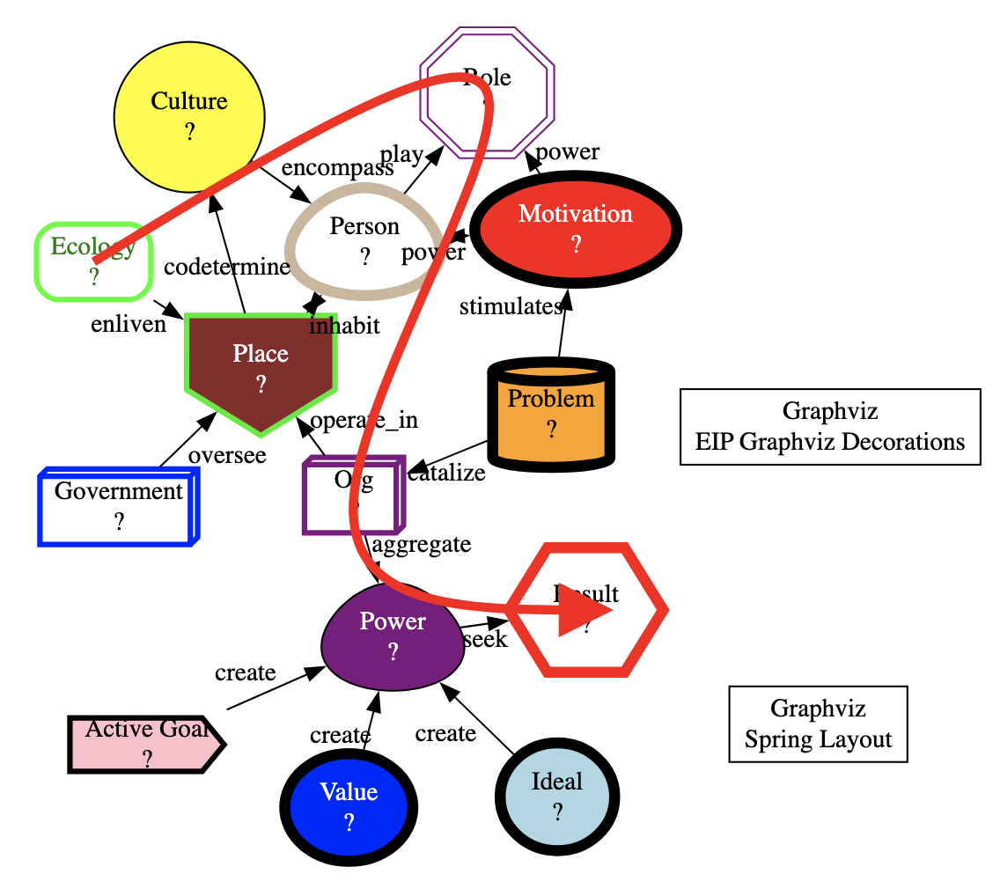

Topics aus dem Federated Wiki Matrix Room
16.–18. November 2026 · 14 Matrix-Beiträge
Jedes Topic führt zu den Beiträgen, in denen es vorkommt, und gegebenenfalls zu Bild oder Quelltext. Die Topic-IDs sind vorläufig. Die Grenzen künftiger FedWiki-Seiten und ASDF-Systeme bleiben offen.
Solo, Trails und Graphviz
- Solo
- FedWiki-Plugin, in dem Ward und andere Trails zeichnen und Graphen anzeigen. [M01 · M02 · SOLO]
- Trail
- Gezeichneter Verlauf über Graphknoten. In der Abbildung verläuft die rote Kurve von Ecology über Role in Richtung Result. [M01 · IMAGE · SOLO]
- Typisierte Knoten
- Gleich beschriftete Platzhalter werden durch Typnamen unterschieden. Die Abbildung zeigt unter anderem Ecology, Role, Person und Result mit einem Fragezeichen. [M01 · IMAGE · SOLO]
- Graphschema im Gebrauch
- Ward liest Marcs Beispiel als Schema. Beziehungen und Knotentypen stehen bereits fest genug, um einen Trail zu skizzieren, während die Knoten im Gebrauch weiter konkretisiert werden können. [M01 · IMAGE]
- Graphviz und Layoutstabilität
- Wie lässt sich ein Trail sichtbar machen, ohne die Knotenanordnung des bestehenden Graphen zu verschieben? Das Replay in Zettel 11727 prüft den früheren Layoutfall. [M02 · IMAGE · TRAILS · SOLO]
- Solo 0.1.32-4
- Ward ordnet die Korrektur für typisierte Knoten und die Layoutverbesserung derselben Version zu. Der Versionscommit und der Stand des Dialogs sind verlinkt. [M02 · RELEASE · SOLO]

Wikimedia, Bot-Erkennung und Öffentlichkeit
- KAPOW
- Wikimedias System zur Klassifikation automatisierter und menschlicher Zugriffe. [M03 · M04 · WIKITECH]
- Pageviews als klassifizierte Messgrösse
- Die Bot-Klassifikation beeinflusst, welche Zugriffe in die Seitenaufrufstatistik eingehen. [M03 · WIKITECH]
- Sichtbarkeit von Infrastrukturdetails
- Ward hebt die Grenze zwischen öffentlicher Beschreibung und eingeschränkter Einsicht in Code, Detaildokumentation und Ausgabedaten hervor. [M04 · WIKITECH]
Mojo, Lisp und heterogene Hardware
- Heterogene Hardware und Codegenerierung
- Lattners Keynote behandelt eine gemeinsame Systemsprache für unterschiedliche Prozessoren und Beschleuniger. [M05 · M06 · M10 · SPLASH]
- Mojo
- Das SPLASH-Abstract nennt parametrisierte Metaprogrammierung und ein Ownership-Modell auf Grundlage von Origins. [M06 · M08 · M12 · SPLASH]
- Application Accelerators
- Ward bringt die FedWiki-Seite unmittelbar nach der Keynote-Diskussion ein. Die konkrete Beziehung zu Mojo bleibt offen. [M11]
- Lisp, Hardware und wirtschaftliche Anreize
- Zugeschriebene these: Wards rückblickende Vermutung über eine frühere Gelegenheit, samt möglichen technischen und ökonomischen Bedingungen. [M07]
- Swift und Erfahrungen aus dem Sprachstart
- Ward verweist auf Swift im Keynote-Q&A und im zweiten, separaten Interview. [M09 · M12]
Sprachinnovation, Softwarearbeit und Personen
- Sprachinnovation und Programmverständnis
- Der von Ward markierte Interviewausschnitt um Minute 55 dient als Einstieg zur Frage, wie Sprachen das Sprechen über Programme verändern. [M13]
- KI-Agenten, Vibe Coding und Softwarearbeit
- Zur Interviewankündigung gehören die Auswahl dessen, was sich zu bauen lohnt, und der Druck auf Open-Source-Maintainer. [M12]
- Chris Lattner
- Keynote-Sprecher und Interviewgast. Wards Vergleich nennt Lattner neben Bostock. [M05 · M06 · M09 · M12 · M14 · LATTNER · SPLASH]
- Mike Bostock
- Ward nennt Bostock als zweite Person neben Lattner. Die Verbindung zu Solo über D3 ist als eigene Ableitung erfasst. [M14 · BOSTOCK]
- D3 und die Trail-Kurve
- Abgeleitet: Mögliche Verbindung von Bostock zu Solo. Solo erzeugt die rote Kurve mit D3, dessen Urheber Bostock ist. [SOLO · D3]
Beziehungen zwischen Topics
Matrix-Fundstellen
Die Zeiten entsprechen der Anzeige im übergebenen Auszug. Die Kennungen M01–M14 verweisen auf diese Wiedergabe der Beiträge.
- M01 · Ein Trail durch Marcs Solo-Beispiel · 2026-11-16 · 23:50 · Ward
Beim Zeichnen eines Trails im Call scheiterte die Zuordnung bei verschieden typisierten Knoten. In Marcs Beispiel unterscheiden sich die Platzhalter durch ihre Typen. Ward beschreibt den Graphen als Schema, das sich im Gebrauch weiter ausarbeiten lässt. - M02 · Solo 0.1.32-4 · 2026-11-16 · 23:56 · Ward
Ward meldet, dass typisierte Knoten im Trail und das stabilere Layout gemeinsam ausgeliefert wurden und der Quellcode auf GitHub steht. - M03 · KAPOW und Pageviews · 2026-11-17 · 17:09 · Ward
Ward verweist auf Wikimedias Bot-Erkennung. Die Einordnung von Zugriffen als automatisiert oder menschlich wirkt sich auf die Seitenaufrufstatistik aus. Quelle öffnen - M04 · Öffentliche Beschreibung, interne Details · 2026-11-17 · 17:11 · Ward
Ward hebt hervor, dass Wikimedia aus Gründen des Infrastrukturschutzes Code, Detaildokumentation und Ausgabedaten von KAPOW intern hält. Für Phabricator-Tickets gilt eine fallweise Sichtbarkeit. - M05 · Codegenerierung für CPUs und Beschleuniger · 2026-11-17 · 22:10 · Ward
Ward kündigt Lattners Vortrag als Blick auf das Programmieren für verschiedene Prozessoren und Beschleuniger an. Ein Bild zur Ankündigung ist im Auszug erwähnt. - M06 · SPLASH’26: Mojo · 2026-11-17 · 22:13 · Ward
Ward nennt die Keynote „Mojo: Towards One Systems Language for All Hardware“ und berichtet, dass sich der Videolink über SPLASH schwer teilen liess. - M07 · Lisp und die verpasste Gelegenheit · 2026-11-17 · 22:31 · Ward
Ward vermutet, dass Lisp-Programmierer Ähnliches früher hätten tun können. Er nennt die damalige Hardware und die wirtschaftlichen Anreize als mögliche Bedingungen und beschreibt seine eigene Abkehr. - M08 · Link zur SPLASH-Keynote · 2026-11-17 · 22:35 · Robert Sterbal
Robert reicht den YouTube-Link nach. Quelle öffnen - M09 · Keynote-Q&A und Swift · 2026-11-17 · 23:02 · Ward
Ward bestätigt das Video und hebt den Q&A-Teil hervor, insbesondere Lattners Rückblick auf Swift bei Apple. - M10 · Die Zukunft des Programmierens · 2026-11-17 · 23:04 · Ward
Ward beschreibt Vortragsdichte und Fachjargon und sieht darin einen Bezugsrahmen für künftige Programmiersprachen. - M11 · Application Accelerators · 2026-11-17 · 23:16 · Ward
Ward stellt den Link zur FedWiki-Seite in die Diskussion. Quelle öffnen - M12 · Lattner-Interview über KI, Mojo und Softwarearbeit · 2026-11-18 · 03:03 · Ward
Ward teilt ein Interview zu KI-Agenten und Vibe Coding, Entscheidungen darüber, was sich zu bauen lohnt, Mojo, Erfahrungen mit dem Swift-Start und dem Druck auf Open-Source-Maintainer. Quelle öffnen - M13 · Sprachinnovation bei Minute 55 · 2026-11-18 · 03:35 · Ward
Ward markiert ungefähr Minute 55 im Interview. Dort geht es laut Ward darum, wie Sprachinnovation verändert, wie wir über das Verhalten von Programmen sprechen. Quelle öffnen - M14 · Die richtige Person zur richtigen Zeit · 2026-11-18 · 03:47 · Ward
Ward nennt Chris Lattner und Mike Bostock als zwei Personen, die für die Zukunft der Software zur richtigen Zeit an den richtigen Fragen arbeiten könnten.
Verlinkte Quellen und Bildbeleg
- IMAGE · Angehängte Graphviz-Abbildung
Die rote Kurve beginnt bei Ecology, biegt bei Role ab und endet mit einer Pfeilspitze bei Result. Die meisten Knoten tragen ein Fragezeichen unter ihrem Typnamen. Kreuzen und Überdecken von Knoten oder Kanten verrät keine zusätzlichen Trail-Stationen. Unter den sichtbaren Legenden stehen EIP Graphviz Decorations und Spring Layout. Quelle öffnen - RELEASE · Solo-Commit 0.1.32-4
Im Quellrepo nachgesehener Versionscommit. Quelle öffnen - SOLO · Solo-Quelltext von 0.1.32-4
Der Quelltext verwendet dotlabel für die Zuordnung von Trail-Knoten zu SVG-Text und übernimmt Hervorhebungen in die reguläre Knotendeklaration. Er importiert D3 und verwendet curveNatural für die rote Kurve. Quelle öffnen - TRAILS · How Trails Travel · Zettel 11727
HyperDoc-Replay zur Layoutstabilität mit Dewey Alexander Trail und Solo 0.1.32-3. Quelle öffnen - WIKITECH · Wikitech · KAPOW
Wikimedia dokumentiert den Einfluss auf Pageviews und die Sichtbarkeit interner Details. Quelle öffnen - SPLASH · ACM SPLASH 2026 · Keynote-Abstract
Das Programm nennt parametrisierte Metaprogrammierung und ein Ownership-Modell auf Grundlage von Origins als Schwerpunkte der Keynote. Quelle öffnen - LATTNER · Chris Lattner
Von Ward verlinktes Personenprofil. Quelle öffnen - BOSTOCK · Mike Bostock
Von Ward verlinktes Personenprofil. Quelle öffnen - D3 · Mike Bostock bei Observable
Bostock nennt D3 als sein Projekt. Quelle öffnen